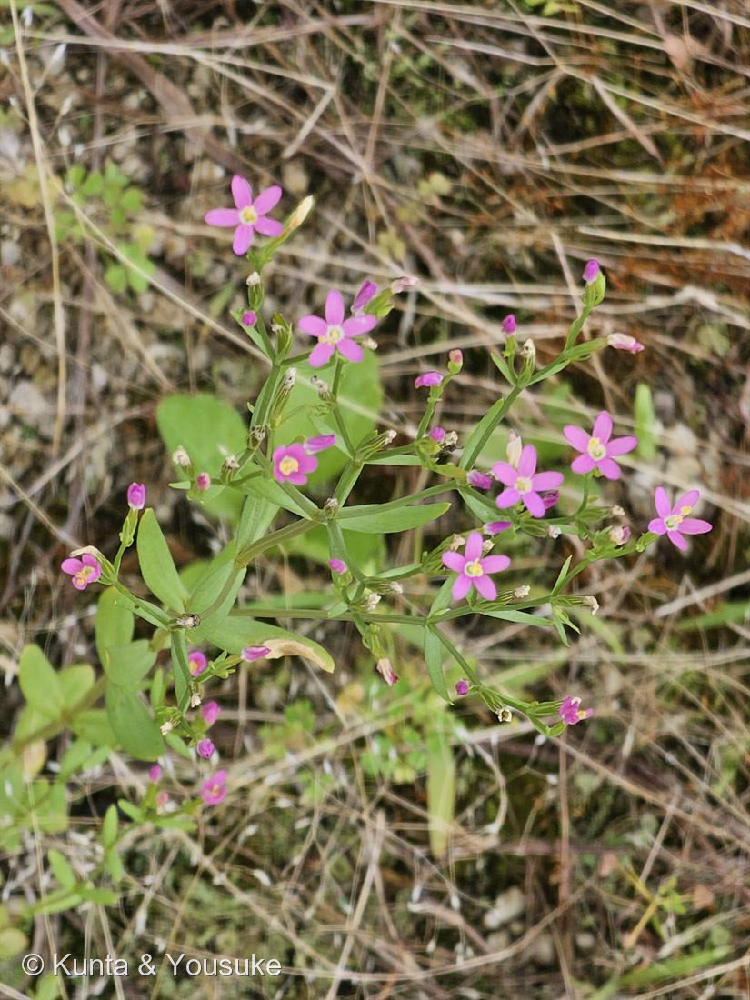

ハナハマセンブリ（花浜千振）
Centaurium tenuiflorum
帰化植物（ヨーロッパ〜地中海原産）／※ベニバナセンブリ C. erythraea の可能性も残る
リンドウ科 · Gentianaceae（シマセンブリ属）── 図鑑で初めての科
燻太さんの出題「ピンク繋がりでこのお花。わかるかな」009オジギソウのピンクのつぼみから、このピンクの星へ
属名の由来 ── ケンタウロスの、キロン
⭐ 名前の「センブリ」は、飾りじゃない ── 苦味の一族
- 和名の「センブリ」は、日本の薬草センブリ（千振）＝Swertia japonica から。
- 千振の名の由来：「千回振り出しても（千回煎じても）、まだ苦い」。日本三大民間薬のひとつ、有名な健胃薬。
- 属はちがう（Centaurium と Swertia）。でも——同じリンドウ科で、同じ苦味成分の一族を持っている（セコイリドイド配糖体：スウェルチアマリン、ゲンチオピクロシドなど）。
- そしてヨーロッパでも、Centaurium は古くからの健胃薬（common centaury）。苦味で胃を動かすという使い方まで同じ。
- 地球の反対側で、同じ科の草が、同じ苦味で、同じように使われてきた。
名前の「センブリ」は、姿が似ているからだけじゃない。中身も似ている。 - ⚠これは 029や027で見た「収れん」（血縁のない他人の空似）とはちがう。共通の祖先から受け継いだ、ほんとうの血縁。
見どころ ── 葯が、ねじれる
- 花が終わると、黄色い葯（やく）がらせん状にねじれる。写真のしぼんだ花（白っぽくなった筒）から、ねじれた葯が突き出している。
- これが Centaurium 属の目印。
- 花は日が当たると開き、曇りや夕方には閉じる。朝8時08分の写真で、もうしっかり開いている。
同定について（正直に）
- 属（Centaurium）は確定。種は、ハナハマセンブリが本命。
- ハナハマセンブリ（本命・C. tenuiflorum）：萼裂片が細く長く、花筒の先近くまで届く／茎葉が細い（線状披針形）／花に短い柄がある。写真はこちらに合う。
- ベニバナセンブリ（対抗・C. erythraea）：萼裂片が短い（花筒の半分以下）／茎葉が幅広い（倒卵形〜長楕円形）／ほぼ無柄／根生葉のロゼットが明瞭。
- 🔍確定させるには：株もとに根生葉（ロゼット）があるかどうかを見るのがいちばん早い。次に通ったら、根もとを覗いてきて。
この植物のこと
- ヨーロッパ〜地中海原産の一年草（越年草）。日本には帰化し、海岸・空き地・道路端の、乾いて日当たりのよい場所に広がっている。
- 写真も、乾いた枯れ草と砂利の中。やせた土地を好む。
- 高さ20〜50cmほど。茎に稜があり、葉は対生で無柄。